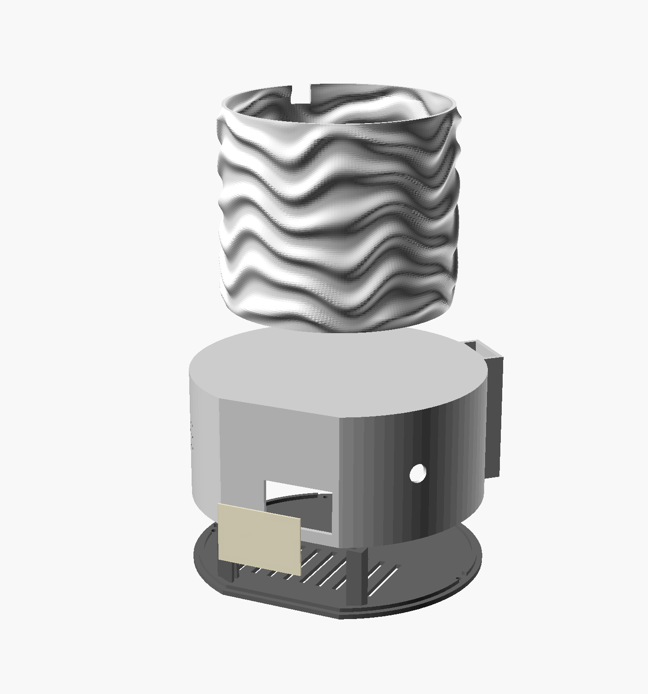

Junction 2026 · Beyond the Clinic challenge · work in progress
Plant the beginning
Smart plant

What it is
A bedside lamp that is also a plant pot, for the months after TMS treatment for depression, when about half of people lose the benefit and nobody is watching closely between clinic visits.
It notices the shape of each day: the morning check-in on its buttons (or a missed one), when the plant gets watered, when daylight reaches the room, and the room's temperature and humidity. When mornings change for several days against the person's own pattern, the clinic gets one gentle flag to check in. It never diagnoses or decides treatment.
The parts, bottom to top
- Floor plate: holds the Arduino UNO Q (2 GB) upright and screws into the base, so everything is wired on the table first.
- Base: the electronics, with a translucent window where the board's LED matrix shows the mood picker, three buttons for the daily check-in, a chime, a light sensor, and a vented pocket outside so the temperature and humidity sensor reads the room.
- Sleeve: a thin wall of ocean waves round the plant's own nursery pot, catching its drainage water; a soil probe rides in the pot, and a 12 V LED strip gives the lamp its warm light.
What it senses: the check-in buttons, soil moisture, room temperature and humidity, and room light (curtains opened, daylight). No camera, no microphone, no bed-exit sensing.
Using it
- Check in: green opens the mood picker, + and − choose (1 to 5), green again saves. Pressing green twice means "ok".
- Colours of a rising sun: a dim ember for a hard morning up to bright, sunny light for a good one. No mood gets a "sad" colour, and nothing blue glows at night.
- Between check-ins the lamp keeps glowing softly in that mood's colour. With the picker closed, + and − dim it, down to off; at 22:00 it dims by itself.
- Away: hold green for 3 seconds, so travel days aren't counted as late mornings.

What real data says about the idea
The lamp's morning rule was tested on real wristband data before building further: the public Depresjon dataset (Simula, Norway), minute-by-minute activity from 23 people with depression and 32 without, about two weeks each. The research behind every design choice was reviewed too.
Average time people got up
First 30 minutes of sustained activity after 04:00, averaged per person, then per group.
People with depression got up about 1 hour 40 minutes later. Getting-up time tells the two groups apart fairly well (AUC 0.79), so mornings are a sensible thing for the lamp to watch.
How much later people got up at weekends
Weekend average minus weekday average, in minutes.
But single mornings are very noisy: everyone's getting-up time moves by about two hours from day to day, and healthy people sleep in by almost two hours at weekends. A rule that says "late = more than an hour after usual" would trip on an ordinary weekend.
How often would the lamp raise a false alarm, and how often would it catch a slip?
The real mornings of the people without depression were replayed through two versions of the rule, first as they are, then with a slow slip added (mornings getting 25 minutes later every day from day 8, a stand-in for the slow change that can come before a relapse).
| Rule | Healthy people flagged by mistake (about a week) | Slow slip caught | Days to notice |
|---|---|---|---|
| First version: 5 late mornings in a row | 1 of 32 (3 %) | 18 of 32 | 6.5 |
| Refined: separate weekday and weekend baselines, 3-day smoothing, 4 of the last 5 days | 6 of 32 (19 %) | 25 of 32 | 6 |
| The lamp's code now, two levels: "check in" after 5 mornings in a row far from usual (earlier or later); "keep an eye" when mornings drift on 5 of the last 6 days or get much more irregular. Weekday and weekend baselines, missing days skipped. | "Check in": 3 of 32 (9 %) "Keep an eye": 6 of 32 (19 %) | "Check in": 22 of 32 Either level: 24 of 32 | 6 5 |
The last row runs the lamp's actual software on the same real mornings. Limits: two weeks per person, no relapse labels, and the slip is simulated. This checks noise and false alarms, not real relapse detection.
What the research adds
- The need is real. Across studies, 53 % of people helped by TMS were still doing well at 6 months and 46 % at 12 months (Senova 2019 meta-analysis). The 2026 Dutch-Flemish consensus supports watching closely and re-treating when symptoms return.
- Irregularity matters more than lateness. In a one-year study of 93 people in remission, a flatter, less regular day-night rhythm went with about twice the relapse risk (Tonon et al., JAMA Psychiatry 2026). Later wake times on their own were not the finding.
- Prediction is modest. Sensing studies reach around 0.7 accuracy at best, so a flag is a reason to ask, never a diagnosis.
- A short validated question helps. A daily or weekly PHQ-2 (two questions) tracks the full PHQ-9 well (r = 0.80), and it is what clinicians already trust.
- Light and plants are support, not therapy. Dawn simulation helped in winter depression at 200-300 lux; the lamp's small window is far dimmer, so it's a gentle wake cue. Caring for a plant is a daily ritual and a signal, not a treatment.
How this changes the product
Most of these are now in the lamp's software; the clinic view below shows them working on simulated people.
A quiet "keep an eye" from the more sensitive rule, and an amber "check in" only from the strict one (later also from a worrying PHQ-2). The clinic sees the expected false-alarm rate next to each flag.
Separate weekday and weekend patterns, a rolling baseline that follows the seasons, and early waking counts as much as sleeping in.
Holding the green button means "I'm away", and a lamp that's unplugged isn't counted as a late morning. In the real data, missing days would otherwise have caused most of the false alarms.
Gives the clinic a validated number to act on, which is how re-treatment decisions are made.
The lamp varies its gentle responses (wake cue, chime, plant reminder) and keeps an honest "still learning" estimate of which ones are followed by steadier mornings and better mood for this person.
"Flags patterns linked to relapse risk", never "predicts relapse"; "gentle wake cue", never therapy. Next: the lamp and the clinic view say plainly that nobody watches in real time, and show where to get help in a crisis.
See it working
The clinic view ranks people by need, shows each morning against the person's own usual time, what the lamp is learning, and a weekly note written with Gemini. It runs on three simulated people whose days went through the lamp's real software, and on the real lamp at Junction: its check-ins, room and plant readings arrive within seconds (choose "Live lamp").
Sources
- Garcia-Ceja et al., Depresjon dataset, Simula: datasets.simula.no/depresjon
- Senova et al. 2019, durability of rTMS response, Brain Stimulation: PubMed 30344109
- Consensus statement on maintenance rTMS (2026): Utrecht University research portal
- Tonon et al. 2026, sleep and rest-activity rhythms as markers of relapse, JAMA Psychiatry: JAMA Network
- RADAR-MDD, sleep and relapse, J Affect Disord 2024: PubMed 39038618
- Daily PHQ-2 against PHQ-9: PMC6030575
- Golden et al. 2005, light treatment and dawn simulation, Am J Psychiatry: AJP